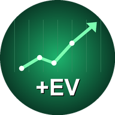

+EV Сигнали
Залози със стойност – само когато коефициентът е по-висок от честния. Всички резултати са публични. Обновено: 29.10.2026 06:42
1Отдели банка
Реши каква сума отделяш само за залози – пари, без които можеш. Не добавяй към нея след загуба и не я ползвай за нищо друго. Всичко по-долу се смята като % от тази банка.
2Залагай % от банката според шанса
По-висок шанс – по-голям залог: 3% при шанс 75%+, 2% при 65–75%, 1.5% при 55–65%, 1% под 55%. Под всеки сигнал пише колко %, а калкулаторът по-долу го превръща в евро за твоята банка.
3Спазвай минималния коефициент
Стойността е в цената. Залагай само ако при твоя букмейкър коефициентът е същият или по-висок от посочения („не под …“). Ако е паднал – пропусни сигнала. Сравни няколко букмейкъра – където е най-висок, там е най-изгодно. При „🔍 Кандидат“ задължително провери коефициента.
4Играй всички сигнали, не подбирай
Предимството идва от много залози, не от един. Ако подбираш „по усет“, губиш точно това предимство. Еднакво правило за всеки сигнал – без изключения.
5Без гонене на загуби
Серии от 3–5 губещи залога са нормални дори при печеливша система. Никога не вдигай залога, за да си върнеш загубеното, и не залагай извън сигналите.
6Преизчислявай банката веднъж седмично
В началото на седмицата смятай процентите от актуалната банка: расте ли – залозите растат, пада ли – намаляват сами. Оценявай резултата след поне 100 залога, не след ден-два.
Само информация, не е съвет за залагане. Залагай отговорно (18+).
 ADIDAS обувки за футбол Mundial Team Turf, черни138,05 €Виж в Decathlon →
ADIDAS обувки за футбол Mundial Team Turf, черни138,05 €Виж в Decathlon → KIPSTA детски обувки за футбол 100 Easy AG/FG11,99 €Виж в Decathlon →
KIPSTA детски обувки за футбол 100 Easy AG/FG11,99 €Виж в Decathlon → KIPSTA детски обувки за футзал Sala Club Easy18,40 €Виж в Decathlon →
KIPSTA детски обувки за футзал Sala Club Easy18,40 €Виж в Decathlon → KIPSTA детски обувки за футзал 100, сини11,96 €Виж в Decathlon →
KIPSTA детски обувки за футзал 100, сини11,96 €Виж в Decathlon → KIPSTA футболна топка Light Learning Ball, размер 56,99 €Виж в Decathlon →
KIPSTA футболна топка Light Learning Ball, размер 56,99 €Виж в Decathlon → KIPSTA футболна топка Softball XLight, размер 55,49 €Виж в Decathlon →
KIPSTA футболна топка Softball XLight, размер 55,49 €Виж в Decathlon → KIPSTA футболна топка Sunny 300, размер 43,49 €Виж в Decathlon →
KIPSTA футболна топка Sunny 300, размер 43,49 €Виж в Decathlon → KIPSTA помпа за топка Essentiel5,99 €Виж в Decathlon →ADIDAS обувки за футбол Mundial Team Turf, черни138,05 €Виж в Decathlon →KIPSTA футболна топка Light Learning Ball, размер 56,99 €Виж в Decathlon →KIPSTA детски обувки за футбол 100 Easy AG/FG11,99 €Виж в Decathlon →KIPSTA футболна топка Softball XLight, размер 55,49 €Виж в Decathlon →KIPSTA детски обувки за футзал Sala Club Easy18,40 €Виж в Decathlon →KIPSTA футболна топка Sunny 300, размер 43,49 €Виж в Decathlon →KIPSTA детски обувки за футзал 100, сини11,96 €Виж в Decathlon →KIPSTA помпа за топка Essentiel5,99 €Виж в Decathlon →
KIPSTA помпа за топка Essentiel5,99 €Виж в Decathlon →ADIDAS обувки за футбол Mundial Team Turf, черни138,05 €Виж в Decathlon →KIPSTA футболна топка Light Learning Ball, размер 56,99 €Виж в Decathlon →KIPSTA детски обувки за футбол 100 Easy AG/FG11,99 €Виж в Decathlon →KIPSTA футболна топка Softball XLight, размер 55,49 €Виж в Decathlon →KIPSTA детски обувки за футзал Sala Club Easy18,40 €Виж в Decathlon →KIPSTA футболна топка Sunny 300, размер 43,49 €Виж в Decathlon →KIPSTA детски обувки за футзал 100, сини11,96 €Виж в Decathlon →KIPSTA помпа за топка Essentiel5,99 €Виж в Decathlon →Калкулатор на банката
Предстоящи сигнали
Отбелязвай с ✓ Заложих какво вече си заложил – вижда се само на твоето устройство.
- Няма предстоящи сигнали в момента. Новите се появяват тук автоматично.
Резултати
| Начало | Мач | Резултат | Залог | Коеф. | % | Банка |
|---|---|---|---|---|---|---|
| 29.10 05:00 | Club América – Club Tijuana | 1:1 ● 80' | Победа: Club América | 1.51 | 2% | ⚪ равен ако мине: +1.02% |
| 29.10 04:30 | San Jose Earthquakes – Colorado Rapids | 2:2 | Корнери: Под 10.5 | 1.97 | 1% | ❌ −1.00% |
| 29.10 04:30 | Seattle Sounders – Houston Dynamo | 0:1 | Корнери (1-во п.в.): Под 4.5 | 2.20 | 1% | ❌ −1.00% |
| 29.10 01:30 | New England Revolution – New York Red Bulls | 3:2 | Корнери (New York Red Bulls): Над 4.5 | 2.20 | 1% | ✅ +1.20% |
| 29.10 00:30 | Red Bull Bragantino SP – Chapecoense SC | 3:0 | Голове: Над 3.5 | 1.96 | 1% | ❌ −1.00% |
| 29.10 00:30 | Red Bull Bragantino SP – Chapecoense SC | 3:0 | Корнери: Над 11.5 | 2.10 | 1% | ❌ −1.00% |
| 28.10 22:00 | Liverpool FC – Chelsea FC | 1:1 | Без равен: Chelsea FC | 2.20 | 1% | ↩️ +0.00% |
| 28.10 21:45 | Fulham FC – Crystal Palace | 0:1 | Корнери (Crystal Palace): Под 3.5 | 2.20 | 1% | ✅ +1.20% |
| 28.10 21:45 | St. Johnstone FC – Motherwell FC | 2:2 | Корнери: Под 9.5 | 2.20 | 1% | ❌ −1.00% |
| 28.10 21:45 | Aberdeen FC – Falkirk FC | 0:1 | Корнери (Aberdeen FC): Над 5.5 | 1.87 | 1.5% | ❌ −1.50% |
| 28.10 21:45 | Celtic Glasgow – Dundee United | 2:2 | Корнери (Dundee United): Над 3.5 | 2.20 | 1% | ✅ +1.20% |
| 28.10 21:45 | Bayer Leverkusen – 1 FC Nuremberg | 5:2 | Корнери: Под 9.5 | 2.20 | 1% | ❌ −1.00% |
| 28.10 21:45 | Bayer 04 Leverkusen – 1. FC Nürnberg | 5:2 | Победа: Bayer 04 Leverkusen | 1.24 | 3% | ✅ +0.72% |
| 28.10 21:45 | AFC Bournemouth – Aston Villa | 3:0 | Повече картони: AFC Bournemouth | 2.40 | 1% | ❌ −1.00% |
| 28.10 21:45 | Holstein Kiel – TSG Hoffenheim | 1:1 | Корнери (1-во п.в.): Под 4.5 | 2.20 | 1% | ❌ −1.00% |
| 28.10 21:30 | Manchester City – Brighton & Hove Albion | 2:2 | Без равен: Manchester City | 1.33 | 3% | ↩️ +0.00% |
| 28.10 21:00 | Juve Stabia – Hellas Verona | 0:1 | Корнери: Над 9.5 | 2.10 | 1% | ✅ +1.10% |
| 28.10 20:00 | IFK Goteborg – Djurgardens IF | 1:1 | Корнери: Под 11.5 | 1.77 | 1.5% | ✅ +1.16% |
| 28.10 20:00 | CD Tarancon – Levante UD | – | Голове (Levante UD) (1-во п.в.): Над 1.5 | 2.20 | 1% | ↩️ +0.00% |
| 28.10 19:30 | Venezia FC – Inter Milano | 0:2 | Корнери: Над 9.5 | 2.25 | 1% | ❌ −1.00% |
| 28.10 19:00 | Dynamo Dresden – Schalke 04 | 2:0 | Корнери: Под 9.5 | 2.25 | 1% | ✅ +1.25% |
| 28.10 18:00 | AC Oulu – Vaasan Palloseura | 0:0 | Корнери (1-во п.в.): Над 4.5 | 2.20 | 1% | ✅ +1.20% |
| 28.10 01:00 | Ceara SC CE – Goias EC GO | 0:2 | Корнери (Goias EC GO): Над 4.5 | 2.10 | 1% | ✅ +1.10% |
| 28.10 00:00 | Argentinos Juniors – Independiente Rivadavia | 1:0 | Корнери (Independiente Rivadavia): Над 3.5 | 2.20 | 1% | ❌ −1.00% |
| 27.10 21:45 | 1. FC Cologne – Union Berlin | 5:0 | Корнери (1. FC Cologne): Под 5.5 | 2.10 | 1% | ✅ +1.10% |
| 27.10 21:45 | Borussia Dortmund – Werder Bremen | 3:2 | Корнери: Под 9.5 | 2.25 | 1% | ✅ +1.25% |
| 27.10 21:45 | SV 07 Elversberg – SV Darmstadt 98 | 0:2 | Корнери: Под 9.5 | 2.25 | 1% | ❌ −1.00% |
| 27.10 21:45 | Borussia M'gladbach – Karlsruher SC | 2:0 | Победа: Borussia M'gladbach | 1.42 | 2% | ✅ +0.84% |
| 27.10 21:45 | Leicester City – Wigan Athletic | 3:0 | Корнери (Wigan Athletic): Под 4.5 | 1.80 | 1.5% | ✅ +1.20% |
| 27.10 21:45 | Sheffield Wednesday – Cambridge United | 1:1 | Корнери: Над 10.5 | 2.20 | 1% | ✅ +1.20% |
| 27.10 21:45 | Luton Town – Doncaster Rovers | 3:1 | Корнери: Под 10.5 | 2.10 | 1% | ✅ +1.10% |
| 27.10 21:45 | Milton Keynes Dons – Bromley FC | 4:1 | Корнери: Над 10.5 | 2.20 | 1% | ✅ +1.20% |
| 27.10 21:45 | Barnet FC – York City FC | 3:1 | Корнери: Над 10.5 | 2.20 | 1% | ❌ −1.00% |
| 27.10 21:00 | Virtus Entella – US Avellino | 1:1 | Корнери: Над 8.5 | 1.77 | 1.5% | ❌ −1.50% |
| 27.10 20:00 | AIK – IF Elfsborg | 2:2 | Корнери: Над 10.5 | 2.10 | 1% | ✅ +1.10% |
| 27.10 19:00 | SG Sonnenhof Grossaspach – FC Augsburg | 2:4 | Корнери: Под 10.5 | 2.10 | 1% | ✅ +1.10% |
| 27.10 19:00 | Rot-Weiss Essen – RB Leipzig | 1:2 | Корнери: Под 10.5 | 1.97 | 1% | ❌ −1.00% |
| 27.10 19:00 | Rot-Weiss Essen – RB Leipzig | 1:2 | Победа: RB Leipzig | 1.22 | 3% | ✅ +0.66% |
| 27.10 01:30 | Juventude – Náutico | 4:0 | Победа: Juventude | 1.54 | 2% | ✅ +1.08% |
| 27.10 01:00 | Flamengo – Atlético Mineiro | 3:2 | Победа: Flamengo | 1.35 | 2% | ✅ +0.70% |
| 26.10 20:45 | Santa Clara – Benfica | 1:2 | Победа: Benfica | 1.33 | 2% | ✅ +0.66% |
| 26.10 20:00 | FC København – Odense Boldklub | 1:1 | Победа: FC København | 1.45 | 2% | ❌ −2.00% |
| 25.10 20:15 | Molde FK – Fredrikstad FK | 5:1 | Победа: Molde FK | 1.40 | 2% | ✅ +0.80% |
| 25.10 18:30 | SC Freiburg – Bayern Munich | 1:3 | Победа: Bayern Munich | 1.48 | 2% | ✅ +0.96% |
| 25.10 09:00 | FC Tokyo – Mito Hollyhock | 6:0 | Победа: FC Tokyo | 1.33 | 3% | ✅ +0.99% |
| 24.10 21:45 | Lazio – Parma | 2:1 | Победа: Lazio | 1.48 | 2% | ✅ +0.96% |
ROI по периоди
| Период | Сигнали | Печеливши / губещи | Банка | ROI |
|---|---|---|---|---|
| Днес | 5 | 1 / 4 | −2.80% | -56.0% |
| Вчера | 18 | 8 / 7 | +1.43% | +6.2% |
| Последните 7 дни | 45 | 26 / 16 | +9.03% | +14.3% |
| Последните 30 дни | 45 | 26 / 16 | +9.03% | +14.3% |
| Този месец | 45 | 26 / 16 | +9.03% | +14.3% |
| Общо | 45 | 26 / 16 | +9.03% | +14.3% |
Футболен магазин
Екипировка на добри цени – с покупка оттук подкрепяш сайта без да плащаш повече.
Как работим
Реклама и партньорства
✉️ Пиши за реклама